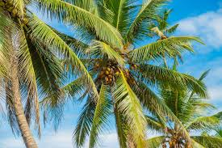

Coconut Tree (Cocos nucifera)
Scientific Name: Cocos nucifera
Description: The coconut tree is a tropical palm native to coastal regions. It is renowned for producing coconuts, which are a key source of food, drink, and oil in many cultures. The tree has a tall, slender trunk and large, feather-like leaves. It is considered the "tree of life" in many parts of the world.
Care Tips:
- Water: Needs regular watering, especially in dry climates, but avoid waterlogging.
- Light: Requires full sunlight for optimal growth.
- Temperature: Thrives in tropical climates with temperatures between 25°C and 30°C.
- Soil: Prefers well-drained, sandy soil.
Uses:
The coconut tree provides various products such as coconuts for water, milk, and oil, as well as wood for building. The leaves can be used for thatching roofs, and the shells are often used in crafting.